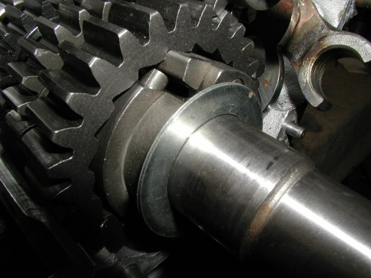
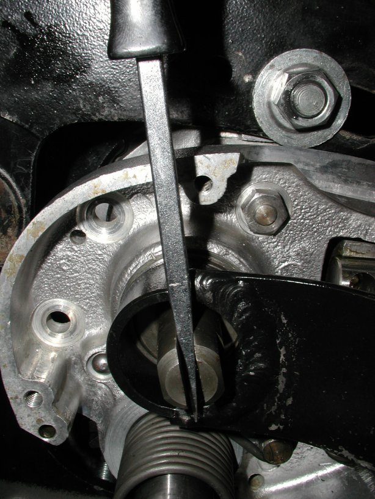

Assembling the Commando gearbox
by Fred Eaton
Summary:
This article in conjunction with your shop manual should help take you through assembling your gearbox.
We are assuming that all parts are new or cleaned, painted or polished and ready for assembling.
We have a complete cut-away gearbox that we will use for this article.
This box lets us see all the moving parts and will help explain the procedures with better pictures.
All the fasteners in the gearbox are Whitworth threads and require Whitworth sockets and wrenches.
If you are not familiar with the Commando gearbox, see Commando Gearbox -- How does it work?
There is a companion article that can be used along with this article,
see Gearbox assembling Check Lists
Procedure:
Installing the bearings and sleeve gear oil seal--
- Make sure the bearing bores and the outer races of the bearings are clean, using contact cleaner.
- Heat the cases in the oven to 300 or 350 Degrees Fahrenheit or heat the cases with a heat gun or propane torch.
- If your bearings were loose in the case when you removed them, you will have to use Red Loctite or Sleeve Retainer
to make sure they do not rotate in the case (see Loctite for information and prices).
I make it a habit to Loctite the bearings in the gearbox shell, but do not worry about the bearing in the inner case,
for it does not seem to be a problem.
I apply the Loctite to the outer race of the bearing, making sure that I do not slop any into the bearing.
- Press the bearing into the case using a drift or the appropriate sized socket
(see Drifts used in building a Commando).
If you find that Loctite does not secure your bearings in the gearbox shell, you will have to replace the shell or have a machinist lock
your bearings in place. At some later time, I may write an article on how to lock your bearings.
- The layshaft roller bearings (06-7710) that Andover Norton currently supply have markings on one side of the bearing, both the outer
and inner races and both on the same side.
I do not know if it matters, but I always keep roller bearings together as they come from the factory.
I suggest you make note of the markings and insert the correct side in the gearbox shell so the inner race fits into the bearing as it
came from the factory.
- Install the sleeve gear oil seal (04-0132) after the cases have cooled down.
Fitting the cam plate --
- The shop manual says to place the cam in 4th gear with the knuckle end of the quadrant aligned to the top front cover stud.
This is correct, but what are you actually doing and if you are off one tooth what is the consequences?
- The quadrant sticks through the inner case and has a rectangular area that it is allowed to move in. If the quadrant is not
located on the cam properly, say one tooth too low, you will be able to get neutral through 4th gears, but not 1st gear. As the
following pictures will show, the quadrant is almost touching the top of its opening in the inner case when in 4th gear and almost
touching the bottom in 1st gear. It is really disappointing to put the whole gearbox together and find you positioned the quadrant wrong.
- I suggest you put the quadrant and cam together, then place the inner case in position and verify that you can get all four gears.
With the gears missing you can see the cam indices, or notches, and plunger through the kickstart shaft hole in the inner case.
I screw the index plunger in just enough that the plunger touches the cam, but not all the way. This lets you easily move the cam to verify
you are getting all four gears. When I say get all four gears, I mean the plunger will fit into the gear notches in the cam.
- The following picture is of the cam plate and its five indices or notches (1st, neutral, 2nd 3rd and 4th).
The cam is positioned in 4th gear by the plunger and notice the position of the quadrant.

- The following picture is of the quadrant without the cam. This shows how the quadrant is positioned when in 4th gear.
You can see that the first tooth at the top of the quadrant will fit with the cam plate gear.
- The following picture is the quadrant fitted to the cam and in 4th gear, seen with the inner case in place.
- The following picture is taken looking through the kickstart hole in the inner case.
In this case the cam is in 1st gear, the neutral notch is to the right of the first gear notch.
You will be able to see the index plunger fit into each gear notch on the cam as you move the quadrant.
This way you can verify that you are getting all four gears before you actually assemble the gearbox.
If you can get all four gears in this step, but when you assemble the box and try to shift it with the
shift lever and it does not shift and the ratchet spring is bent correctly, you have the quadrant one tooth too high.
This mainly will occur with the MK3 gearboxes due to a larger window for the quadrant arm.
- The following picture is the quadrant fitted to the cam and in 1st gear, seen with the inner case in place.
- Fit the O-rings (04-0129) into both the quadrant and camplate shafts and secure with the bolt (04-0136) and washer (00-0174)
for the camplate and the pre-MK3 quadrants. For the Mk3 quadrant, use the O-ring (04-0129), washer (06-5149) and circlip (01-9512).
- The shaft of the camplate is supposed to stick out past the casting boss slightly, so that you can tighten up the bolt and the cam shaft
will still rotate. I have found in some cases the camplate shaft is too short or the gearbox shell casting is too long and I can not
tighten up the camplate.
What I have had to do is take a thin 1/4" washer that the O.D. is less that the I.D. of the casting boss, File out the I.D. of the washer so it
will fit over the bolt, and this will shim out the camplate shaft enough to be able to get it tight.
The gears --
The gears on their shafts.
This picture shows the positions of the gears on their shafts. The top shaft is the mainshaft and the lower shaft is the layshaft.
The shafts are positioned so that the inner case would go on the right. You can see the large mainshaft bearing, that would fit into the
gearbox shell, still on the sleeve gear (4th gear main).
The only gear positions that could be confusing are 1st gear main and 4th gear lay.
1st gear main.
1st gear main is positioned so that the side with the longer protrusion fits up against the bearing in the inner case.
4th gear lay.
4th gear lay is flat on one side and has a small protrusion or shoulder on the other as shown in the above picture. This small protrusion fits
up against the lay shaft bearing in the gearbox shell. If you look close at the picture of "The gears on their shafts", you will see that the layshaft
has the inner race of the roller bearing (06-7710) installed on the layshaft. The protrusion of 4th gear lay fits against this inner race.
Fitting the gears and shafts --
- Squirt some of the 90w gear oil you are going to fill your gearbox with on the two bearings in the gearbox shell.
- Fill a small tub with gear oil, so you can dip each gear and bushing into it prior to placing into the gearbox. I do this to make
sure everything is thoroughly lubricated and for ease in fitment.
- Leave the index plunger loose (as when I installed the cam plate) so I can easily rotate the cam plate to assist in getting
the selector forks to seat into the cam plate.
- Fit the sleeve gear (4th main) through its bearing by gently tapping on it with a rubber mallet.
- Fit 3rd gear lay and its bushing on the layshaft with the dog side going on the shaft first.
- Fit the 4th gear lay on the layshaft with the flat side going on the shaft first.
- Fit the inner race for the layshaft roller bearing on to the layshaft with the flanged end going on first.
- Fit the layshaft into its bearing.
- Fit 3rd gear main and its selector fork onto the main shaft. The selector forks shaft points inward to the gearbox shell and the
groove in the gear that the fork rides in goes on the shaft last.
I find by placing the cam plate in 3rd gear, it is easier to get the selector fork pin to engage in the cam plate.
You want the pin to fit into the upper cam track (see the first picture in this article).
- Fit 2nd gear main and its bushing on the main shaft with the dog side going on first.
- Fit 2nd gear lay and its selector fork on the layshaft. The selector forks shaft points out of the gearbox shell and the
groove in the gear that the fork rides in goes on the shaft first. Engage the selector fork pin in the lower cam track.
- Thread the selector fork spindle through both selector forks and screw all the way into the shell.
- Fit 1st gear lay to the layshaft with the kickstart notched side going on last.
- Fit 1st gear main with the longer protrusion going on last.
 The gears in the gearbox shell (in 1st gear).
The gears in the gearbox shell (in 1st gear).
Check end play on the layshaft and verify the gear clusters are properly assembled--
- When using the roller bearing (06-7710) for the layshaft, the layshaft is allowed to float, so the end play needs to be checked.
You check the amount of end play by using a dial indicator as shown in the following picture.
Zero end play will lock up the gears and too much end play will make for sloppy meshing between gears.
I try to have around .005" to .010" end play. The end play will grow slightly when the gearbox heats up during riding, so the
.005" is a good value to try to obtain.
Checking the end play on the layshaft.
- To check the end play:
- Assemble everything into the gearbox shell as described in the above section.
- Clean the sealing edges on the gearbox shell and the inner case, so as not to oil up the gasket in the next step.
- Place the inner case gasket over the studs. If you want, you can seal this gasket to the gearbox shell at this time or leave it dry on
both sides. Do not seal both sides of the gasket, since you may be removing the inner case to shim out the layshaft.
I use Gasgacinch (part # 78-401001) to seal the gaskets in the gearbox.
If you do not want to use the gasket for this step, you will have to subtract the thickness of the gasket from the amount you need to shim.
The gaskets are around .020" thick, but you should measure your gasket.
- Put the inner case onto the gearbox shell as described in the next section and tighten up the seven nuts.
- With the inner case firmly in place, you can now check the end play.
- The rear isolastic shims work for the layshaft shims.
These shims come in four sizes (06-0775 -- .005", 06-0776 -- .010", 06-0777 -- .020" and 06-0778 -- .030").
The following picture shows a couple of shims on the kickstart shaft, where you would place them.
However the shims need to be placed under the kickstart stops in the inner case and then the kickstart shaft inserted through the
shims and the case. The reason for this is that the O.D. of the shims are too large to slip by the kickstart stops.
This is not a problem since I always put the kickstart shaft into the inner case before installing the inner case to the gearbox shell.
In some cases the radius of the kickstart shaft, where it steps up to the ratchet block of the shaft, may be larger that the I.D. of the shims.
If this is the case, you will need to enlarge the I.D. with a file or small grinding wheel so the shim fits up flat against the ratchet block
of the shaft.

Shims on the kickstart shaft.
- Remove the inner case from the gearbox shell, place any shims in their position and replace the inner case to check that you have the
desired end play and that you have not locked up the gears.
- Check that you have assembled the gear clusters correctly while you have the inner case bolted to the gearbox shell. With the
index plunger screwed almost all the way in, but not too tight (you want the cam plate to move easy by hand)
you should be able to move the quadrant from 4th gear (the upper most position of the quadrant)
to 1st gear (the lower most position of the quadrant).
You may have to turn the main shaft and the sleeve gear shaft in order to get the dogs on the gears to mesh,
but all four gears should be obtained.
Installing the inner case --
- Remove the inner case from the gearbox shell after checking the end play checking and that the gear clusters were properly assembled.
- If you removed the studs on the gearbox shell, thread them back into the shell. The two long studs (04-0064) go through the outside of the
inner case and the five short studs (00-0271) go through the inside on the inner case. You can use Blue Loctite
to secure these studs. Use two of the stud nuts (00-0004) as jam nuts to tighten up the studs.
- Squirt a bit of gear oil on the mainshaft bearing in this case.
- Lightly grease up the knuckle pin roller and insert into the quadrant. Apply enough grease to hold the roller in place.
- Place any shims required under the kickstart stops and insert the kickstart shaft as shown below.
Make sure the shaft is firmly seated against the shims or case and rotated counter clockwise so the pawl
is retracted and the shaft is against the stop.
- Clean off the sealing edges of the gearbox shell and the inner case with contact cleaner. I spray the cleaner on a shop towel
and wipe it around the edges.
- Apply gasket sealer to both sides of the inner case gasket (04-0030), the sealing edge of the gearbox shell and the inner case.
Again I use Gasgacinch (part # 78-401001) to seal the gaskets in the gearbox.
- After letting the sealer sit the required time, fit the gasket over the gearbox shell studs and press up against the shell.
- Assemble the kickstart shaft (06-6169) with the spring (04-0044), plunger (04-0069), pawl (06-2015) and pin (04-0033).
- Lightly oil all the parts (spring, plunger, pawl and pin).
- Place the spring into the kickstart shaft.
- Place the plunger over the spring.
- Place the pawl on top of the plunger, compressing the spring (see the pictures for witch side of the pawl is up).
- Place the pin through the kickstart shaft, holding the pawl in place. There is a recess in the pin bore of the kickstart shaft to
accept the head of the pin. The pin should be flush with the sides of the kickstart shaft.
- Make sure the paw moves freely and the spring returns the pawl to the extended position when depressed and released.
I have seen new pawls with a casting mark on the side that kept the pawl from moving freely. A bit of filing on the casting mark
will allow the pawl to move freely.
- Hold on to the kickstart shaft from the outside and place the inner case on the gearbox shell.
There are four things that will hold the inner case away from the gearbox shell: The shafts are not fully seated in their bearings,
the kickstart shaft or pawl, the selector fork spindle, and the knuckle pin roller.
- Make sure both shafts are firmly seated into their bearings.
- If you hold the kickstart shaft firmly against the inner case and it is up against its stops, you just have to make sure the layshaft fits
into the bushing inside the kickstart shaft. You can get a screwdriver or even your finger between the cases and position the layshaft if
it is not fitting into the kickstart shaft.
- You can see if the selector fork spindle is centered in the hole that it fits into in the inner case. You can center the spindle
with a screwdriver.
- If the knuckle pin roller is greased, just make sure it is not hanging up on the side of the inner case.
- Thread the seven nuts on the studs and tighten. Torque to 15 ft.lb. The shop manual does not have a tightening order,
but I normally tighten the nuts in a cross pattern to be on the safe side.
- Clean the mainshaft threads with contact cleaner and the inside of the mainshaft nut (04-0023).
Apply some blue Loctite to the threads of the mainshaft and torque the nut to 40 ft.lb.
Installing the clutch operating lever --
- You need to get the lever motion directly in line with the clutch cable hole, so the cable will pull straight up on the lever and not at an angle.
The shop manuals tell you to mark the inner case before you dismantle the lever body. This is fine if it was positioned correctly
previously and you did not clean the inner case. I put the outer cover on to the inner case and mark the inner case as shown below.
I normally move the mark down the edge after I remove the outer cover to see the mark better.
Marking the cable position on the inner case.
- Place the clutch operating ball in the clutch operating lever body and place in position with the lockring hand tightened.
Aligning the body to the mark.
- I place a screwdriver into the slot in the body to keep the proper positioning of the body and then tighten the lockring.

Tightening the clutch operating lever body with a home built tool.
Tightening the clutch operating lever body with the Old britts lockring socket.
- There is not a factory tool available to remove the lockring, but we have developed a lockring socket (see below). You can make a removal tool by taking
a section of 1 1/2" pipe, obtained from any hardware store, and removing the sides to leave two tangs that fit into the lockring
notches. You can drill a hole in the end and insert a screwdriver for leverage, or you can weld a handle as I did in the following
pictures. Please do not use a screwdriver to pound against one of the notches on the lockring. If you must, use a round punch and you may
get the ring on without damaging it. The lockring is right hand thread.
 Home made tool.
Home made tool.
Old Britts Lockring Socket.
- Assemble the clutch operating lever as shown in the parts or shop manual.
Installing the kickstart spring --
- Slide the spring over the kickstart shaft.
- With a screwdriver you can pry the spring tang out so it will fit into the hole in the kickstart shaft.
- Hold the end of the spring hook with a pair of vise grip pliers and turn it clockwise to just below the stud and feed onto the stud.
You may need a screwdriver to push the hook onto the stud.

Inside the outer cover --
You can put the ratchet assembly together, being held together by the two springs and then bolt to the outer cover or assemble on the
outer cover. The following pictures and the parts manual show how the parts go together.
There are three important things to check when putting this assembly together:
The ratchet assembly seen from the side.
Installing the outer cover --
- Clean off the sealing edges of the outer cover and the inner case with contact cleaner. I spray the cleaner on a shop towel
and wipe it around the edges.
- Apply gasket sealer to both sides of the outer cover gasket (04-0055), the sealing edge of the outer cover and the inner case.
Again I use Gasgacinch (part # 78-401001) to seal the gaskets in the gearbox.
- After letting the sealer sit the required time, fit the gasket on to the inner case, aligning properly so that the five cover
screw holes are centered in the five gasket holes.
- Fit the outer cover to the inner case, making sure the shafts on the ratchet assembly fit into the knuckle pin roller and the
bushing in the inner case.
Return to Old Britts home page
Return to Technical Articles
Return to Build Your Own Commando
This page was written and designed by F. H. Eaton
& Associates if you have any questions or comments please
contact us at info@fheaton.com